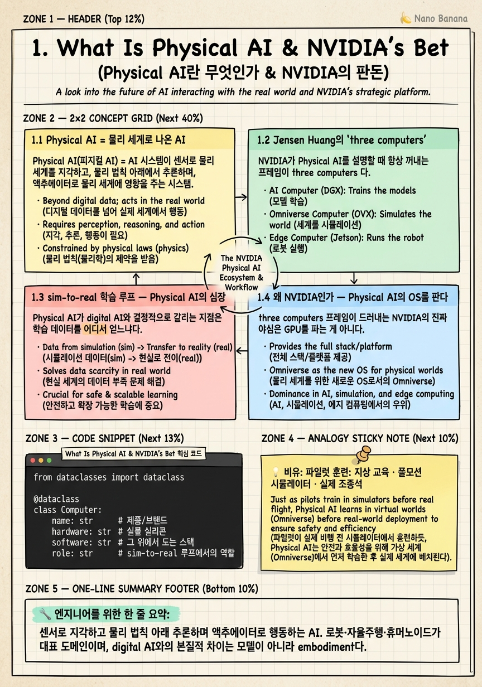
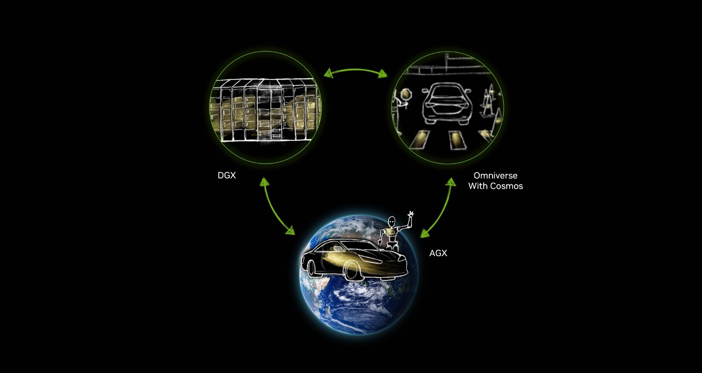

What Is Physical AI & NVIDIA's Bet

🎯 학습 목표
- Physical AI와 기존 digital AI의 차이를 embodiment 관점에서 설명할 수 있다
- NVIDIA의 'three computers'(train·simulate·deploy) 프레임을 그릴 수 있다
- sim-to-real 학습 루프가 왜 Physical AI의 중심인지 이해한다
- NVIDIA가 layer마다 무엇을 파는지(하드웨어~모델) 지도를 잡는다
- 이 코스 전체가 어떤 순서로 지형을 훑을지 예측할 수 있다
지난 10여 년의 AI는 대부분 digital AI였다. 텍스트를 읽고 쓰고, 이미지를 만들고, 코드를 생성한다. 이 세계의 출력은 화면 안에 머문다 — 틀려도 물리적으로 다치는 사람이 없고, 시간을 무시하고 배치로 처리할 수 있으며, 데이터는 인터넷에 넘쳐난다. 그런데 로봇 팔이 컵을 집고, 휴머노이드가 계단을 오르고, 차가 교차로를 통과하는 순간 규칙이 완전히 달라진다. 출력이 물리 세계에 힘을 가하기 때문이다.
Physical AI(피지컬 AI) 는 바로 이 세계 — AI가 물리 세계에서 지각(perceive)·추론(reason)·행동(act)하는 것 — 을 가리킨다. 로봇, 자율주행, 휴머노이드가 대표적이다. digital AI와 달리 embodiment(신체성)·물리법칙·실시간(real-time)·안전(safety)이라는 제약이 처음부터 끝까지 따라붙는다. 이 제약들이 왜 문제를 근본적으로 바꾸는지가 이 챕터의 첫 절반이다.
나머지 절반은 NVIDIA의 판돈이다. Jensen Huang은 Physical AI를 "three computers" 문제로 프레이밍한다 — 학습하는 컴퓨터, 시뮬레이션하는 컴퓨터, 로봇/차에 탑재되어 실시간 추론하는 컴퓨터. 이 세 컴퓨터를 잇는 것이 sim-to-real 학습 루프이고, NVIDIA는 그 루프의 모든 층 — 실리콘(CUDA)부터 시뮬레이터(Omniverse), 학습 프레임워크(Isaac), 데이터 생성 모델(Cosmos), 배치 칩(Jetson)까지 — 을 수직 통합해 'Physical AI의 OS'를 팔려 한다. 이 코스 전체가 그 지도를 한 층씩 걸어 내려가는 여정이다.
핵심 내용
1.1 Physical AI = 물리 세계로 나온 AI
Physical AI(피지컬 AI) = AI 시스템이 센서로 물리 세계를 지각하고, 물리 법칙 아래에서 추론하며, 액추에이터로 실제 행동을 일으키는 것. 로봇 매니퓰레이션, 이족보행 휴머노이드, 자율주행(AV)이 대표 도메인이다.
digital AI와 Physical AI를 나누는 것은 모델 크기나 아키텍처가 아니라 embodiment(신체성) 이다. 몸을 가진 순간 네 가지 제약이 동시에 켜진다.
-
물리 법칙: 중력·마찰·관성·충돌이 항상 참이다. 모델이 물리적으로 불가능한 행동을 출력하면 실패하는 게 아니라 넘어지거나 부순다.
-
실시간(real-time): 로봇은 배치로 생각할 수 없다. 세계가 계속 움직이므로 정해진 control frequency(예: 50~1000Hz) 안에 결정을 내야 한다. latency가 곧 성능이자 안전이다.
-
안전(safety): 틀린 문장은 지우면 되지만, 틀린 토크는 사람을 다치게 한다. 오류의 비용이 비대칭적으로 크다.
-
데이터 희소성: 텍스트는 인터넷에 조 단위 토큰이 있지만, "로봇이 이 특정 컵을 이 각도에서 집는" teleoperation 데이터는 시간당 수십 달러로 사람이 직접 만들어야 한다.
이 차이를 표로 정리하면 문제의 형태가 왜 다른지 분명해진다.
| 축 | Digital AI | Physical AI |
|---|---|---|
| 출력 | 화면 안 (텍스트·픽셀) | 물리 세계의 힘·토크 |
| 시간 | batch, 무시 가능 | real-time, control loop |
| 오류 비용 | 되돌릴 수 있음 | 되돌릴 수 없음, 안전 |
| 데이터 | 인터넷 스케일 | 희소, 수집 비쌈 |
| 평가 | offline metric | 실제 물리 rollout |
핵심 통찰: Physical AI의 난이도는 "더 똑똑한 모델"이 아니라 "데이터를 어디서 구하고, 물리를 어떻게 값싸게 겪게 하느냐" 에서 나온다. 그리고 그 답이 시뮬레이션이다.
1.2 Jensen Huang의 'three computers'
NVIDIA가 Physical AI를 설명할 때 항상 꺼내는 프레임이 three computers 다. 하나의 로봇을 만들려면 성격이 전혀 다른 세 대의 컴퓨터가 필요하다는 관점이다.
-
(1) 학습 컴퓨터 — NVIDIA DGX: 데이터센터의 GPU 클러스터. foundation model과 policy를 학습한다. "무겁고 느리게, 그러나 대규모로 배우는" 뇌.
-
(2) 시뮬레이션 컴퓨터 — Omniverse (+ OVX): 가상 세계를 돌려 synthetic data를 만들고, 정책을 안전하게 test하며, digital twin을 유지한다. 실세계 데이터의 희소성을 우회하는 '연습장'.
-
(3) 배치 컴퓨터 — Jetson AGX/Thor(로봇) 또는 DRIVE AGX(차량): 로봇/차 안에 탑재되어 real-time으로 추론하고 행동한다. 작고 저전력이지만 지연 없이 도는 '척수'.
세 컴퓨터의 역할을 매핑하면 이렇게 된다.
| 컴퓨터 | 하드웨어 | 소프트웨어 | 역할 | 위치 |
|---|---|---|---|---|
| Train | DGX (Blackwell/Hopper) | PyTorch, Isaac Lab, GR00T | 모델·정책 학습 | data center |
| Simulate | Omniverse / OVX | OpenUSD, Isaac Sim, Cosmos | synthetic data·test·twin | data center / cloud |
| Deploy | Jetson Thor / DRIVE Thor | TensorRT, Isaac ROS | real-time 추론·행동 | robot / vehicle edge |
이 프레임이 왜 강력한가? 세 컴퓨터가 하나의 데이터·모델 포맷으로 연결되어 순환하기 때문이다. 시뮬레이션이 데이터를 만들면 학습 컴퓨터가 정책을 굽고, 그 정책이 배치 컴퓨터로 내려가 실세계를 겪고, 그 실패가 다시 시뮬레이션으로 돌아온다. NVIDIA의 전략은 이 세 꼭짓점과 그 사이를 잇는 파이프 전부를 파는 것이다.

1.3 sim-to-real 학습 루프 — Physical AI의 심장
Physical AI가 digital AI와 결정적으로 갈리는 지점은 학습 데이터를 어디서 얻느냐다. 인터넷에는 로봇의 행동 데이터가 없다. 그래서 등장하는 것이 sim-to-real 루프다.
루프는 다음 순서로 돈다.
-
real (씨앗 데이터): 소량의 실제 시연(teleoperation)·센서 로그를 모은다. 비싸므로 적다.
-
sim (증폭): 시뮬레이터에서 그 씨앗을 물리적으로 그럴듯한 수천~수백만 배로 늘린다. 조명·재질·물체 위치를 무작위로 흔드는 domain randomization으로 다양성을 준다.
-
train (학습): 이 대량의 합성 데이터로 정책/모델을 학습한다.
-
deploy (배치): 학습한 정책을 실제 로봇에 올려 물리 세계에서 돌린다.
-
gap (측정·환류): 실패를 관찰하고 다시 1로.
거칠게 말하면 유효 데이터량은 \(D_{\mathrm{eff}} = D_{\mathrm{real}} \times k_{\mathrm{sim}}\) 처럼 시뮬레이션 배수 \(k_{\mathrm{sim}}\) 에 비례해 폭발한다. sim이 사실상 공짜로 데이터를 찍어내기 때문에, 병목이 "데이터 수집"에서 "시뮬레이션의 충실도"로 이동한다.
그 대가가 sim-to-real gap 이다.
sim-to-real gap(심투리얼 갭) = 시뮬레이션에서 학습한 정책이 실제 세계로 옮겨질 때 생기는 성능 저하. 물리 근사 오차, 렌더링과 실제 카메라의 차이, 센서 노이즈 모델 불일치 등에서 나온다.
이 코스에서 앞으로 만나는 거의 모든 기술 — RTX 렌더의 사실성(3장), Newton 물리(4장), Cosmos의 물리 정확 생성(5장), 합성 데이터 파이프라인(7장) — 은 결국 이 gap을 줄이거나, gap이 있어도 견디는 정책을 만들기 위한 것이다. Physical AI를 이해한다는 건 이 루프를 이해한다는 것과 거의 같다.
1.4 왜 NVIDIA인가 — Physical AI의 OS를 판다
three computers 프레임이 드러내는 NVIDIA의 진짜 야심은 GPU를 파는 게 아니다. Physical AI의 운영체제(OS) 를 파는 것이다.
NVIDIA는 스택의 모든 층에 제품을 깔아 두었다.
-
실리콘·CUDA: 모든 것의 바닥. 병렬 연산의 사실상 표준.
-
Omniverse + OpenUSD: 3D 세계의 공통 데이터 층(substrate). (2장)
- Isaac Sim / Cosmos: 시뮬레이션과 데이터 생성. (3·5·7장)
- Isaac Lab / Newton: 로봇 학습 프레임워크. (4장)
- GR00T / COMPASS 등 정책: foundation model과 워크플로우. (8·9장)
- Jetson Thor / DRIVE Thor: 배치 실리콘. (12장)
이 수직 통합(vertical integration)의 강점은 명확하다. 한 회사가 학습·시뮬·배치를 하나의 데이터 포맷(OpenUSD)과 하나의 런타임(CUDA)으로 묶으면, 층 사이의 마찰이 사라진다. 시뮬에서 만든 asset이 그대로 학습에 쓰이고, 학습한 정책이 그대로 Jetson에 내려간다. 경쟁사가 개별 층에서 아무리 좋은 조각을 만들어도 이 '이음매 없는 파이프'를 이기기 어렵다.
동시에 이것은 lock-in(락인) 이기도 하다. 스택 전체를 채택할수록 특정 층만 다른 회사 제품으로 갈아끼우기가 어려워진다. NVIDIA가 Isaac Sim·Cosmos·Newton을 상당 부분 오픈소스로 푸는 것도 이 긴장과 무관하지 않다 — 생태계를 키워 표준을 선점하되, 성능의 정점(RTX·Blackwell·Thor)은 자사 하드웨어에서만 최대로 나오게 설계한다.
면접 관점의 통찰: "왜 NVIDIA가 Physical AI에서 유리한가?"의 정답은 "GPU가 빨라서"가 아니라 "three computers를 하나의 포맷과 런타임으로 수직 통합해 sim-to-real 루프의 마찰을 없앴기 때문" 이다. 그리고 그 대가가 lock-in이라는 점까지 말할 수 있어야 균형 잡힌 답이다.
1.5 이 코스의 지형 — 스택을 따라 내려가기
이 코스는 무작위 토픽 나열이 아니라 스택을 한 층씩 훑는 지도다. 관통하는 순서는 이렇다.
Omniverse(substrate) → Isaac Sim / Cosmos(data) → Isaac Lab(train) → policy(GR00T/COMPASS) → Jetson(deploy)
이 순서를 syllabus에 겹쳐 보면 전체 지형이 보인다.
| 구간 | 챕터 | 스택 층 |
|---|---|---|
| 기반 | 2 Omniverse & OpenUSD | substrate |
| 시뮬·데이터 | 3 Isaac Sim, 5 Cosmos, 7 합성데이터 | data |
| 학습 | 4 Isaac Lab & Newton | train |
| 통합 지도 | 6 네 기둥 관계성 | 전 층 |
| 정책 | 8 GR00T, 9 R²D² 워크플로우 | policy |
| 응용 | 10 AV 스택, 11 산업 트윈 | vertical |
| 배치 | 12 Jetson Thor | deploy |
| 종합 | 13 2026 최전선 | 전체 |
읽는 법에 대한 조언: 각 챕터에서 새 제품 이름이 나올 때마다 "이건 three computers 중 어디에 속하고, sim-to-real 루프의 어느 단계를 담당하나?"를 스스로 물어라. 그러면 20개가 넘는 NVIDIA 제품 이름이 개별 암기 대상이 아니라 하나의 지도 위 좌표로 정렬된다.
다음 챕터부터는 이 지도의 맨 아래층 — 모든 것이 그 위에 서는 공통 3D 데이터 층, Omniverse와 OpenUSD — 부터 파고든다.
💡 비유로 이해하기
항공사가 조종사를 길러내는 방식은 three computers와 놀랍도록 똑같다.
먼저 지상 교육(ground school) 이 있다. 교실에서 항공역학·규정·시스템을 대규모로, 천천히, 깊게 배운다. 이게 학습 컴퓨터(DGX)다 — 느리지만 근본을 굽는 곳.
그다음 풀모션 시뮬레이터(full-motion simulator) 다. 유압으로 흔들리는 진짜 같은 조종석에서 엔진 화재, 측풍 착륙, 계기 고장을 수백 번 겪는다. 실제 비행기와 승객을 위험에 빠뜨리지 않고도 위험한 상황을 무한히 반복할 수 있다. 이게 시뮬레이션 컴퓨터(Omniverse)다 — 값싸게, 안전하게, 대량으로 경험을 찍어내는 곳.
마지막이 실제 조종석(real cockpit) 이다. 진짜 하늘에서 real-time으로, 되돌릴 수 없는 결정을 내린다. 이게 배치 컴퓨터(Jetson/DRIVE)다.
그리고 모든 조종사가 아는 사실 하나 — 시뮬레이터에서 완벽했는데 실제 착륙에서 예상 못 한 돌풍에 흔들린다. 이게 정확히 sim-to-real gap이다. 시뮬레이터를 아무리 정교하게 만들어도(RTX·Newton·Cosmos) 실물과의 미세한 차이는 남고, 훈련의 목표는 그 gap을 줄이는 동시에 gap이 있어도 무너지지 않는 조종사를 만드는 것이다. Physical AI 엔지니어가 하는 일이 바로 이것이다.
💻 코드 예시
three computers를 개념 dataclass로 모델링하고, sim-to-real 루프에서 시뮬레이션이 유효 데이터를 어떻게 증폭하는지 개념적으로 보여준다. 실행 자체보다 '어느 컴퓨터가 무엇을 담당하는가'의 매핑을 읽는 것이 목적이다.
from dataclasses import dataclass
@dataclass
class Computer:
name: str # 제품/브랜드
hardware: str # 실물 실리콘
software: str # 그 위에서 도는 스택
role: str # sim-to-real 루프에서의 역할
THREE_COMPUTERS = {
"train": Computer(
"NVIDIA DGX", "Blackwell/Hopper cluster",
"PyTorch · Isaac Lab · GR00T", "foundation model·policy 학습"),
"simulate": Computer(
"Omniverse (+OVX)", "RTX / OVX server",
"OpenUSD · Isaac Sim · Cosmos", "synthetic data·test·digital twin"),
"deploy": Computer(
"Jetson Thor / DRIVE Thor", "Blackwell edge SoC",
"TensorRT · Isaac ROS", "real-time 추론·물리 행동"),
}
def sim_to_real_loop(real_hours: float, sim_multiplier: int) -> dict:
# real 데이터는 비싸고 희소 → sim이 물리적으로 증폭한다
effective_hours = real_hours * sim_multiplier
return {
"seed_data_from": "real teleoperation",
"amplified_in": THREE_COMPUTERS["simulate"].name,
"effective_hours": effective_hours, # D_eff = D_real x k_sim
"trained_on": THREE_COMPUTERS["train"].name,
"deployed_to": THREE_COMPUTERS["deploy"].name,
"must_manage": "sim-to-real gap",
}
print(sim_to_real_loop(real_hours=10, sim_multiplier=5000))Computer dataclass는 각 컴퓨터를 (name, hardware, software, role) 4-튜플로 본다 — three computers를 암기하는 대신 이 4축으로 어떤 NVIDIA 제품이든 좌표화할 수 있다. THREE_COMPUTERS 딕셔너리가 train·simulate·deploy 세 꼭짓점을 채운다. sim_to_real_loop는 루프의 핵심 산술 하나만 보여준다: 실제 10시간의 씨앗 데이터가 시뮬레이션 배수 5000을 만나 5만 시간의 유효 데이터가 된다는 것 — 이것이 왜 시뮬레이션이 Physical AI의 심장인지의 정량적 이유다. 마지막 must_manage 필드가 이 증폭의 대가, 즉 sim-to-real gap을 상기시킨다.
🏭 현업에서의 평가
✅ 시니어가 보는 것
- Physical AI와 digital AI의 차이를 embodiment(물리·실시간·안전·데이터 희소)로 구조화해 설명
- three computers(train·simulate·deploy)를 하드웨어·소프트웨어·역할로 매핑
- sim-to-real 루프에서 시뮬레이션이 데이터 병목을 우회하는 메커니즘과 그 대가(gap)를 함께 설명
- NVIDIA 강점을 'GPU 성능'이 아니라 '수직 통합에 의한 파이프 마찰 제거'로 규정
- lock-in 리스크와 오픈소스 전략의 긴장을 균형 있게 언급
⚠️ 레드 플래그
- Physical AI를 그냥 '로봇에 쓰는 AI'로만 말하고 embodiment 제약을 못 짚음
- three computers를 셋 다 데이터센터 GPU로 뭉뚱그림 (deploy가 edge라는 점 누락)
- sim-to-real gap의 존재를 인지하지 못하고 '시뮬로 학습하면 끝'이라고 단정
- NVIDIA 우위를 '하드웨어가 빨라서'로만 환원
- lock-in을 전혀 언급하지 않는 무비판적 찬양
🎤 예상 인터뷰 질문
- Q1. digital AI에서 잘 통하던 '데이터 스케일링'이 Physical AI에서 곧바로 안 되는 이유를 embodiment 관점에서 설명하라.
- Q2. three computers 각각을 하드웨어·소프트웨어·역할로 매핑하고, 셋을 잇는 데이터가 어떻게 순환하는지 sim-to-real 루프로 그려라.
- Q3. NVIDIA의 수직 통합이 경쟁 우위인 이유와, 동시에 그것이 왜 lock-in 리스크인지 한 문장씩으로 정리하라.
✨ 핵심 요약
Physical AI = 물리 세계로 나온 AI
센서로 지각하고 물리 법칙 아래 추론하며 액추에이터로 행동하는 AI. 로봇·자율주행·휴머노이드가 대표 도메인이며, digital AI와의 본질적 차이는 모델이 아니라 embodiment다.
embodiment이 네 제약을 동시에 켠다
몸을 가지면 물리 법칙·실시간(control loop)·안전(비가역 오류)·데이터 희소가 한꺼번에 작동한다. 이 제약들이 문제의 형태를 digital AI와 근본적으로 다르게 만든다.
병목은 모델이 아니라 데이터·물리다
인터넷에는 로봇 행동 데이터가 없다. 그래서 Physical AI의 핵심 질문은 '더 똑똑한 모델'이 아니라 '데이터를 어디서 구하고 물리를 어떻게 값싸게 겪게 하느냐'이며, 그 답이 시뮬레이션이다.
three computers: train · simulate · deploy
학습 컴퓨터(DGX), 시뮬레이션 컴퓨터(Omniverse+OVX), 배치 컴퓨터(Jetson/DRIVE)의 세 꼭짓점. 특히 배치 컴퓨터는 데이터센터가 아니라 로봇/차 안의 저전력 edge라는 점이 핵심이다.
sim-to-real 루프가 심장이다
소량의 real 씨앗 → sim에서 대량 증폭 → train → deploy → gap 측정 → 다시 real. 유효 데이터가 시뮬 배수에 비례해 폭발하는 대신, 대가로 sim-to-real gap을 관리해야 한다.
sim-to-real gap이 남는 과제다
물리 근사·렌더링·센서 노이즈의 불일치로 시뮬에서 학습한 정책이 실세계에서 성능이 떨어진다. 코스의 거의 모든 기술(RTX·Newton·Cosmos·합성데이터)이 이 gap을 겨냥한다.
NVIDIA는 GPU가 아니라 OS를 판다
CUDA→Omniverse→Isaac→Cosmos→Jetson까지 모든 층을 수직 통합해 sim-to-real 루프의 마찰을 제거한다. 우위의 원천은 성능보다 '이음매 없는 파이프'다.
수직 통합의 이면은 lock-in
스택을 채택할수록 특정 층만 교체하기 어려워진다. NVIDIA의 오픈소스 전략(Isaac Sim·Cosmos·Newton)은 표준 선점과 lock-in 사이의 긴장을 관리하는 수단이다.